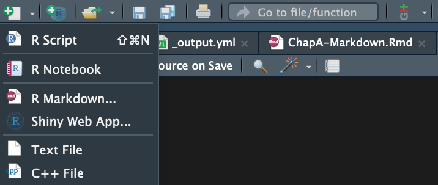
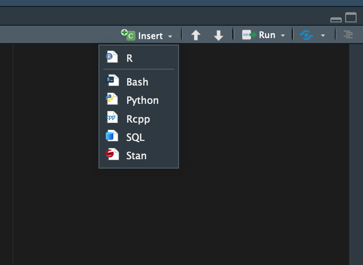
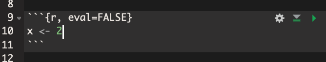

Chapter 14 Eine kurze Einführung in R Markdown
Hier gibt es eine kurze Einführung in R Markdown.
Wir beschränken uns dabei auf die grundlegende Idee von Markdown, da die
konkrete Syntax im Internet an zahlreichen Stellen wunderbar erläutert ist
und man das konkrete Schreiben am besten in der Anwendung lernt.
14.1 Markdown vs. R-Markdown
Bei Markdown handelt es sich um eine sehr einfache Auszeichnungssprache,
d.h. eine Programmiersprache, mit der schön formatierte Texte erstellt werden
können und die gleichzeitig auch für Menschen sehr einfach lesbar ist.
Dateien, die in Markdown geschrieben sind, sind gewöhnlicherweise an der
Endung .md zu erkennen.
R-Markdown stellt man sich am besten als eine Kombination von Markdown und R
vor:
R-Markdown Dateien, die immer durch die Dateiendung .Rmd gekennzeichnet sind,
bestehen sowohl aus Markdown-Code, als auch aus R-Code.
Das bedeutet, dass man sein Forschungsprojekt gleichzeitig erklären und
durchführen kann.
Im Prinzip können ganze Forschungspapiere in R-Markdown verfasst werden und
damit vollständig reproduzierbar gestaltet werden.
14.2 Installation von R-Markdown
Für den Fall, dass Sie mit R-Studio arbeiten brauchen Sie lediglich
das Paket rmarkdown zu installieren:
install.packages('rmarkdown')Das Standardformat für R-Markdown Dokumente ist html.
Damit Sie auch PDF-Dokumente erstellen können müssen Sie noch eine
Latex-Distribution.
Wir empfehlen Ihnen in jedem Fall die Distribution
tinytex
zu installieren, unabhängig davon, ob Sie bereits über eine andere
Distribution verfügen.
Beachten Sie, dass nach der Installation des Pakets tinytex die
die tinytex-Distribution noch nicht installiert wurde.
Das Paket und die Distribution sind zwei unterschiedliche Dinge!
Um die Distribution zu installieren müssen Sie bei bestehender
Internetverbindung noch folgenden Befehl in Ihrer R-Konsole
ausführen:
tinytex::install_tinytex()Beachten Sie, dass das einen kurzen Augenblick dauern kann und dass ca. 65 MB an Dateien aus dem Internet heruntergeladen werden.
14.3 Der R-Markdown Workflow
14.3.1 Ein neues R-Markdown Dokument erstellen
R-Studio macht es Ihnen sehr leicht R-Markdown Dokumente zu erstellen.
Klicken Sie einfach auf den Button Neu und wählen dort dann
R Markdown aus, wie auf folgendem Screenshot zu sehen ist:

Im folgenden Fenster können Sie getrost die Standardeinstellungen so wie vorgeschlagen belassen, da Sie alles später noch sehr leicht ändern können.
Sie sehen nun eine Datei, das bereits einigen Beispielcode enthält und damit schon einen Großteil der Syntax illustriert.
Ein R-Markdown Dokument besteht in der Regel aus zwei Teilen: dem Titelblock und dem darunter folgenden Dokumentenkörper:

14.3.2 Der Titelblock
Der Titelblock ist immer durch zwei Zeilen mit dem Inhalt “---” oben und
unten abgegrenzt.
Die Syntax des Titelblocks folgt der Sprache
YAML, aber das hat wenig
praktische Relevanz.
Im Titelblock werden alle globalen Einstellungen für das Dokument vorgenommen.
Für einfache Dokumente muss nur wenig an den Standardeinstellungen geändert
werden, aber im Laufe der Zeit werden Sie merken, dass Sie über den YAML-Block
Ihr Dokument zu ganz großen Teilen individualisieren können.
In der Regel finden Sie alle Antworten durch Googlen, daher werde ich hier nicht
weiter auf den Header eingehen.
14.3.3 Der Textkörper
Der Textkörper besteht aus normalem Text, welcher in der Markdown Syntax geschrieben ist, und so genannten Chunks. Für die wirklich einfache Syntax für normalen Text gibt es zahlreiche gute Anleitungen im Internet, z.B. dieses eingängige Cheat Sheet.
Innerhalb der Chunks können Sie Code in einer beliebigen Programmiersprache schreiben, insbesondere auch in R. Die Syntax unterscheidet sich dabei überhaupt nicht von einem normalen R Skript.
Um einen Chunk zu Ihrem Dokument hinzuzufügen klicken Sie oben rechts im
Skripbereich auf ‘Insert’ und wählen R aus:

Daraufhin wird an der Stelle des Cursors ein Chunk in Ihr Dokument
eingefügt.
Dieser Chunk wird in der ersten und letzten Zeile durch ``` begrenzt.
In der ersten Zeile wird zusätzlich innerhalb von geschweiften Klammern die
Programmiersprache des Chunks definiert:

Darüber hinaus kann das Ausführverhalten für den Chunk durch weitere Argumente innerhalb der geschweiften Klammer weiter spezifiziert werden.
Häufig möchten Sie z.B., dass der Code im Chunk zwar im Dokument angezeigt,
aber nicht ausgeführt werden soll.
Dies können Sie durch die Option eval=FALSE erreichen.
In diesem Fall sähe Ihr Chunk so aus:

In diesem Beispiel wird die Zuweisung x <- 4 bei der Kompillierung des
Dokuments nicht ausgeführt.
Eine gute Übersicht über die Optionen, die Ihnen offen stehen, finden Sie hier oder durch Googlen.
Sie können einzelne Chunks auch schon vor dem Kompillieren des Dokuments ausführen indem Sie auf das Play-Zeichen oben links beim Chunk drücken. Damit erhalten Sie eine Vorschau auf das Ergebnis.
14.3.4 Kompillieren von Dokumenten
Der Prozess, der aus dem Quellcode ihres Dokuments (also allem was in der .Rmd
Datei geschrieben ist) das fertige Dokument erstellt, wird Kompillieren genannt.
Dabei wird aus dem .Rmd Dokument ein gut lesbares .html oder .pdf Dokument
erstellt, wobei alle Chunks normal ausgeführt werden (es sei denn dies wird
durch die Option eval=FALSE verhindert).
Grundsätzlich gibt es zwei Möglichkeiten ein Dokument zu kompillieren: über die entsprechende R-Funktion, oder über den Knit-Button in R-Studio.
Die klassische Variante verwendet die Funktion render() aus dem Paket
rmarkdown. Die wichtigsten Argumente sind dabei die folgenden: input
spezifiziert die zu kompillierende .Rmd-Datei, output_format das
für den Output gewünschte Format97 und
output_file den Pfad und den Namen der zu erstellenden Outputdatei.
Wenn Sie also das Dokument FirstMarkdown.Rmd kompillieren wollen und den
Output unter Output/OurMarkdown.html als html-Datei speichern wollen,
dann können Sie das mit folgendem Code, vorausgesetzt die Datei
FirstMarkdown.Rmd liegt im Unterordner R:
rmarkdown::render(
input = "R/FirstMarkdown.Rmd",
output_format = "html",
output_file = "output/FirstMarkdown.html")Weitere Informationen zu den Parametern finden Sie wie immer über die help()
Funktion.
Alternativ können Sie auch den Button Knit in der R-Studio Oberfläche
verwenden.
Das ist in der Regel bequemer, lässt aber weniger individuelle Anpassungen zu.
14.4 Relative Pfade in Markdown-Dokumenten
Der problematischste Teil beim Arbeiten mit R-Markdown ist der Umgang mit
relativen Pfaden.
Um das Problem zu illustrieren nehmen wir einmal folgende Ordnerstruktur an,
wobei der Ordner MarkdownProject unser Arbeitsverzeichnis ist:
Das Problem ist nun, dass wenn Sie eine R-Markdown Datei kompillieren, diese
Datei alle Pfade nicht ausgehend von Ihrem Arbeitsverzeichnis
interpretiert, sondern vom Speicherort der .Rmd-Datei.
Das ist natürlich hochproblematisch, denn stellen Sie sich vor, Sie möchten
in Ihrem R-Markdown-Skript die Datei data/BIP-Data.csv einlesen.
Normalerweise würden Sie dafür den folgenden Code verwenden:
bip_data <- data.table::fread("data/BIP-Data.csv")Zwar würde der Code in einem R-Skript, z.B. in R/R-Skript.R perfekt
funktionieren.
In einem R-Markdown Dokument, das nicht im Arbeitsverzeichnis direkt
gespeichert ist, jedoch nicht.
Da in R-Markdown-Dokumenten alle Pfade relativ des Speicherorts des Dokuments
interpretiert werden, müssten wir hier schreiben:98
bip_data <- data.table::fread("../data/BIP-Data.csv")Das wäre allerdings unschön, weil wir dann unterschiedlichen Codes in Skripten und in R-Markdown-Dokumenten verwenden müssten und das Ganze dadurch deutlich verwirrender werden würde.
Es wäre also schön, wenn R automatisch wüsste, was das Arbeitsverzeichnis des
aktuellen Projekts ist und dieses automatisch berücksichtigt, unabhängig davon
ob wir mit einem .R oder .Rmd Dokument arbeiten und wo dieses Dokument
innerhalb unserer Projekt-Struktur gespeichert ist.
Zum Glück können wir genau das mit Hilfe des Pakets
here
erreichen.99
Das Paket enthält eine Funktion here() die als Argument einen Dateinamen
oder einen relativen Pfad akzeptiert, und daraus einen absoluten Pfad auf dem
Computer, auf dem der Code gerade ausgeführt wird, konstruiert.
Wir können also unseren Code von oben einfach folgendermaßen umschreiben:
bip_data <- data.table::fread(here::here("data/BIP-Data.csv"))In dieser Form funktioniert er sowohl in .R als auch .Rmd Dateien ohne
Probleme.
Hinweis I: Die Funktion
here()verwendet verschiedene Heuristiken um das Arbeitsverzeichnis des aktuellen Projekt herauszufinden. Darunter fällt auch das Suchen nach einer.RprojDatei. Überhaupt funktionieren die Heuristiken in der Regel wunderbar und können für Ihren konkreten Fall über die Funktiondr_here()angezeigt werden. Um ganz sicherzugehen sollte man aber immer in das Arbeitsverzeichnis eine Datei.hereablegen. Diese kann manuell, oder über die Funktionset_here(), erstellt werden.
Hinweis II: Die Verwendung von
here()ist essenziell, wenn Ihre R-Markdown Dokumente auf mehreren Computern funktionieren sollen. Daher ist die Verwendung in den Arbeitsblättern verpflichtend.
14.5 Abschließende Hinweise
Es ist essenziell, dass wir uns das Dokument nach dem Kompillieren nochmal genau anschauen und überprüfen, dass keine ungewollten Chunks ausgeführt wurden und alle Referenzen stimmen. Die Gefahr, dass wir beim Coden etwas übersehen haben ist sehr groß, da es sich bei Markdown nicht um eine What you see is what you get-Sprache handelt: das Ergebnis ist nicht live, sondern erst nach dem Kompillieren sichtbar.
Ansonsten sollten Sie folgende Aspekte beim Erstellen von Markdown-Dokumenten immer beachten:
- Schauen Sie sich das kompillierte Dokument aus der Perspektive der Leser:innen an: ist überflüssiger Code oder überflüssige Information vorhanden, die Sie eliminieren können? Oft geben wir Tabellen für uns als Zwischenergebnis aus, diese sind dann aber für die finalen Adressaten eher störend. Grundsätzlich gilt: nur die nötigsten Ergebnisse und für das Verständnis essenziellen Code im finalen Dokument belassen.
- Ist das Dokument gut lesbar, oder gibt es Elemente, die den Lesefluss
stören? Klassische Kandidaten sind Tabellen, die für das gewählt Format zu
breit oder sehr lang sind. Reduzieren Sie die Tabellen in diesem Falle
auf das Notwendige (z.B. durch Verwendung von
head()oderdplyr::select()). - In der Regel sind Nachrichten (‘messages’) und Warnungen (‘warnings’) zwar für Sie wichtig, aber für Leser:innen eigentlich immer nur störend. Schalten Sie sie daher in den Chunks eher aus. Das geht über die Chunk Optionen
message=FALASE, warning=FALSE, aber am einfachsten als Standardeinstellung am Anfang Ihres Dokuments:
knitr::opts_chunk$set(
message = FALSE, warning = FALSE)- Überhaupt kann man sich über die globalen Chunk-Optionen viel
Tipp-Arbeit sparen. So bietet sich häufig auch
fig.align = 'center'oder sogarecho=FALSEan, wenn Sie Chunks standardmäßig nicht im Markdown anzeigen lassen wollen. - Falls Sie Regressionsoutput in Ihrem Dokument haben: häufig ist der
Output der
summary()Funktion nicht sonderlich schön. Außerdem wird es leicht unübersichtlich wenn Sie mehrere Regressionen ausgeben. Es bietet sich hier häufig die Verwendung von alternativen Paketen wie stargazer oder texreg an. Für Tabellen bietet sich ansonsten das Paket xtable an. - Überprüfen Sie ob alle Referenzen (zu Tabellen, Sektionen, etc.) im Text vorhanden sind oder Sie etwas vergessen haben. Suchen Sie dazu im finalen Dokument einfach nach Fragezeichen.
14.6 Weitere Quellen
Eine gute Übersicht über die häufigsten Befehle enthält dieses Cheat Sheet. Eine sehr umfangreiche Einführung bietet das Online-Buch R Markdown: The Definitive Guide. Aber auch darüber hinaus finden sich im Internet zahlreiche Beispiele für die R-Markdown-Syntax. Dieses Skript wurde übrigens in R Bookdown, einer Erweiterung von R-Markdown für Bücher, geschrieben.
R-Markdown Dateien können in sehr viele verschiedene Formate kompilliert werden, das am häufigsten verwendete Format ist jedoch
html. Eine Übersicht finden Sie hier.↩︎Mit
../bewegt man sich bei einem relativen Pfad einen Ordner nach oben.↩︎Tatsächlich ist
heredermaßen praktisch, dass ich empfehle grundsätzlich alle Pfade in jedem Projekt - ob R-Markdown oder nicht - mit Hilfe vonhereanzugeben.↩︎